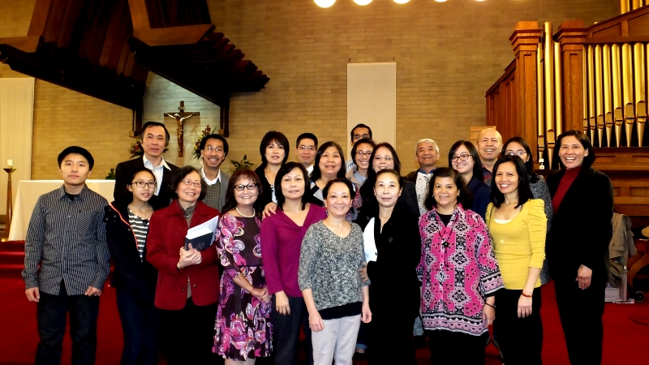

To the choir:
Another year so fast has passed And many things have changed. Yet through it all we have stood firm A choir of humble faith
We may not be too flashy We are not singers pro, But when we sing, we sing as one We give our best each go.
The best part of the choir Is the friendship that we share, We are a team that has much fun, Spreading song with joy and care.
Practice maketh perfect, Or so the saying goes, You put in your hours, And sing out those bars, And soon the result will show
And it shows!
In all that we do, We are much improved, And keep getting better and better, So let's stay the same, A family that's game, To sing for our Lord and our master.
-Antonio

Dear friends,
Merry Christmas! It has always been a pleasure to sing and play with you these past six years. Thank you and your families for your commitment to the choir and performing every month. Our choir is still my favorite of all the choirs I've played for :) I'm proud of how far we've come! Have a wonderful, blessed Christmas Day.
-Mai